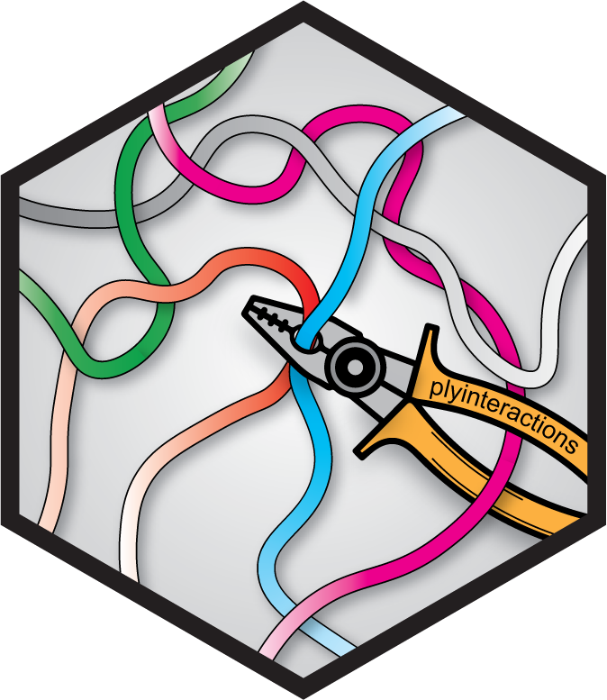

Data files provided in the plyinteractions package
Source:R/data.R
plyinteractions-data.RdLoops identified in GM12878 with HiCCUPS: File obtained from GEO entry
GSE63525(GSE63525_GM12878_primary+replicate_HiCCUPS_looplist.txt.gz). Rao SS, Huntley MH, Durand NC, Stamenova EK et al. A 3D map of the human genome at kilobase resolution reveals principles of chromatin looping. Cell 2014 Dec 18;159(7):1665-80. PMID: 25497547Interactions identified in L3 C. elegans by ARC-C: Supplemental Table 2 obtained from Genome Biology online publication. Huang N, Seow WQ, Appert A, Dong Y, Stempor P and Ahringer J Accessible Region Conformation Capture (ARC-C) gives high-resolution insights into genome architecture and regulation. Genome Res 2022 Feb;32(2):357-366. PMID: 34933938
Annotated regulatory elements in C. elegans: Figure 2 - Source data 1 obtained from eLife online publication. Jänes J, Dong Y, Schoof M, Serizay J, Appert A, Cerrato C, Woodbury C, Chen R, Gemma C, Huang N, Kissiov D, Stempor P, Steward A, Zeiser E, Sauer S and Ahringer J Chromatin accessibility dynamics across C. elegansdevelopment and ageing. Elife 2018 Oct 26;7. PMID: 30362940